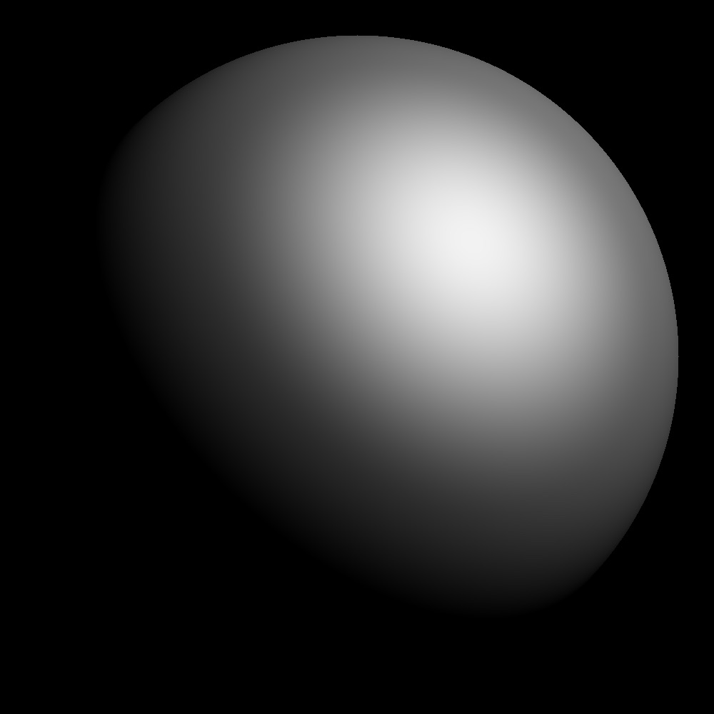
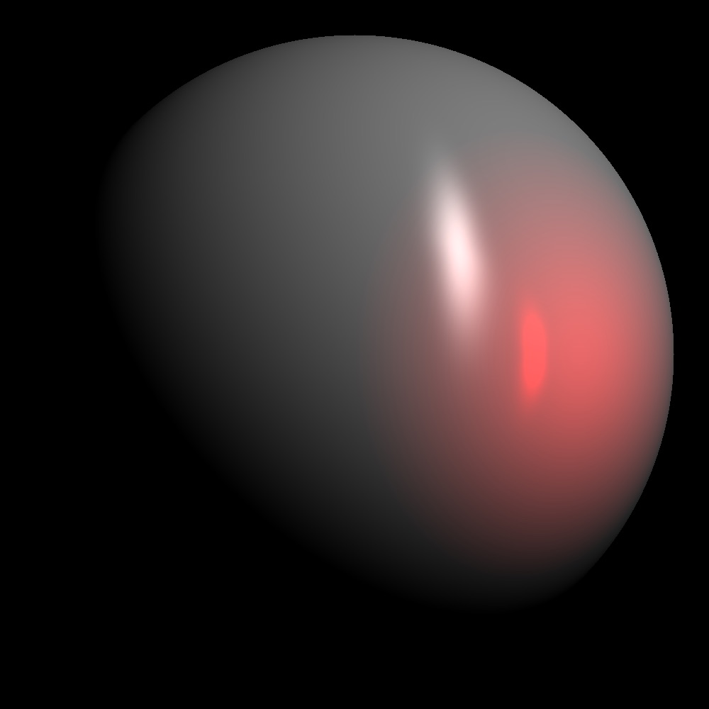
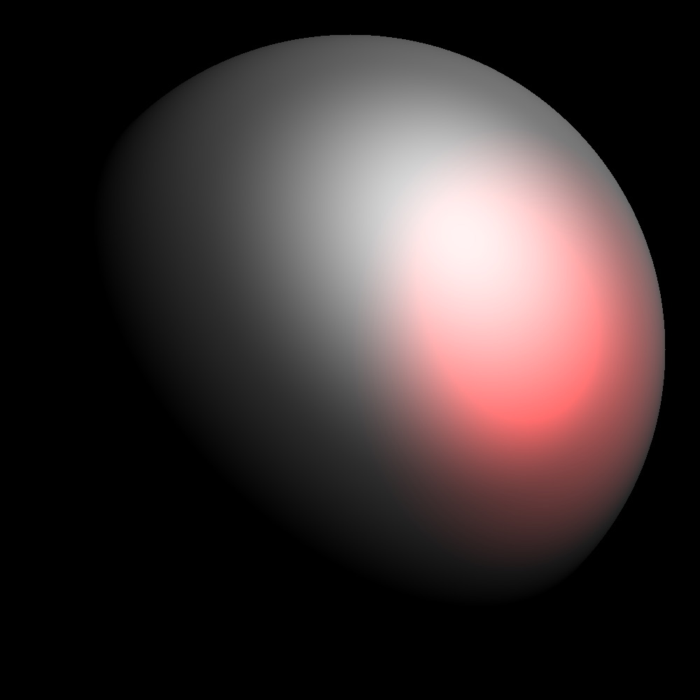
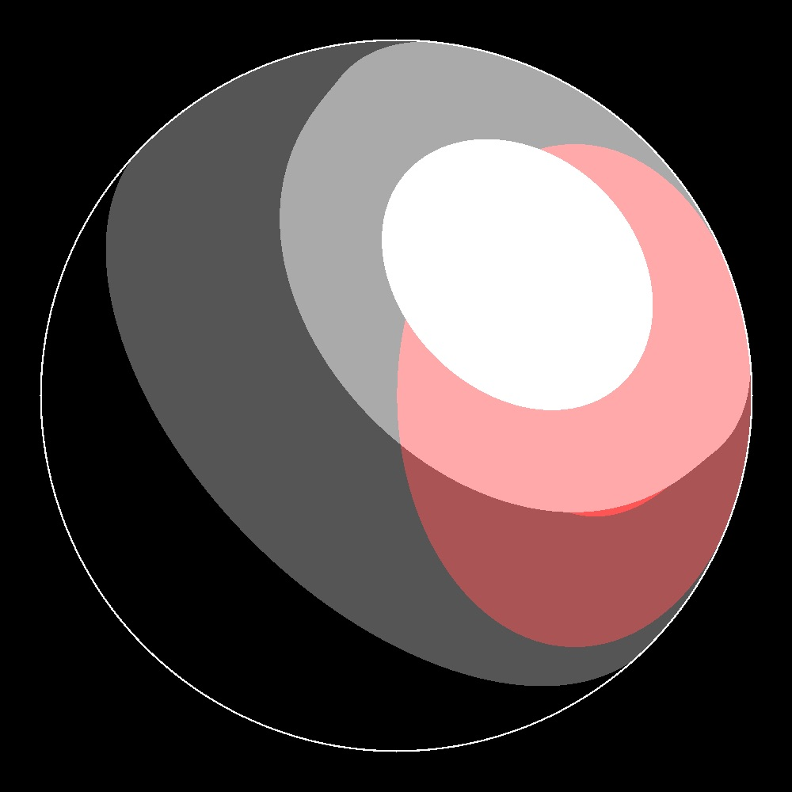
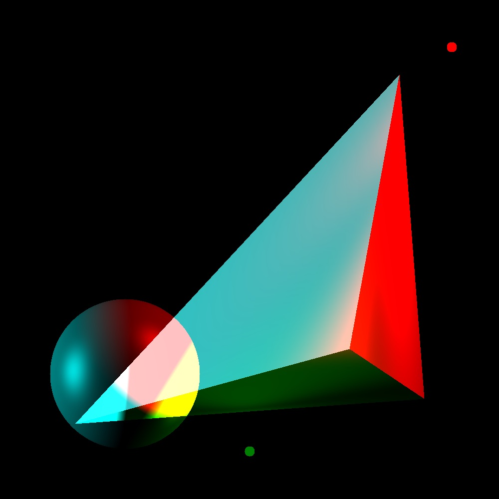

Sphere with Light
This shows a sphere and a directional light with both the diffuse and specular components

Anisotropic Specularity
This image shows a sphere with anisotropic shading with u greater than v.

Multiple Light Sources
This image shows a sphere with a single white directional light and a single red point light.

Multiple Spheres
This image shows the capability of having multiple spheres that can interact with the lights.

Toon Shading
This images shows a version of toon shading.

Tetrahedron
This image shows the extra feature of a new shape: the tetrahedron.